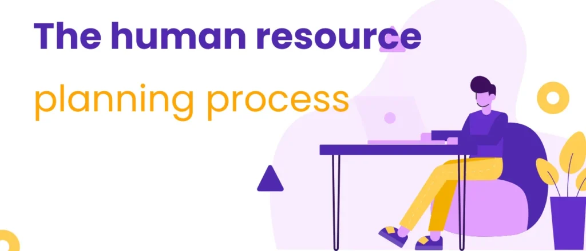
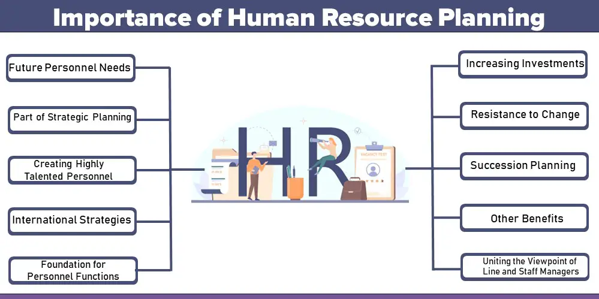
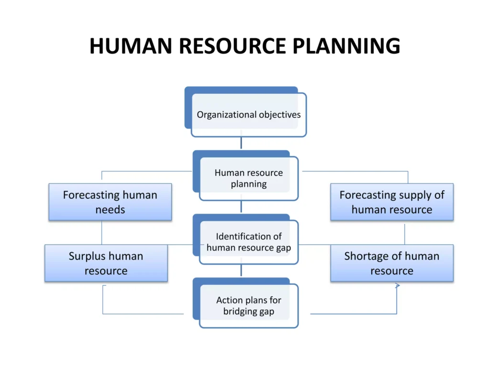

Expanded Nursing Uganda Explanation
Human Resource Planning should be reviewed through safe maternal and newborn assessment, early recognition of danger signs, respectful communication and timely referral. Connect the definition to vital signs, bleeding, fetal or newborn wellbeing, patient education and local protocol requirements.
01 HUMAN RESOURCE PLANNING
Human resources planning is planning for the future personnel needs of an organization required to meet its overall goals, taking into account both internal activities and factors in the external environment.
Human resources planning is the process of forecasting a firm’s future for, and supply of the right type of people in the right number.
02 Importance of Human Resource Planning
1. Defining the future personnel need : Planning helps determine future personnel needs. Surplus and deficiency in staff strength result from the absence of or defective planning. Lack of systematic HRP has resulted in large-scale overstaffing in many public sector organizations.
2. Coping with changes : Fast changes in the business scene require formal, meticulous HRP. Health organizations must adapt to changes in medical technology, regulations, and patient demographics, necessitating strategic human resource planning.
3. Part of strategic planning : HR management must become an integral part of the strategic management process. In successful companies, there is no distinction between strategic planning and HRP. HR managers are important facilitators of the strategic planning process and are viewed as important contributors to carve the organization’s future.
4. Creating highly talented personnel: Jobs are becoming highly intellectual, requiring employees to possess higher levels of education and specialized skills. Manpower planning helps prevent shortages of such knowledgeable people.
5. International strategies : HRP plays a crucial role in supporting an organization’s international expansion strategy.. The HR department needs to fill key jobs with expatriates, motivate them, and compensate them. (Expatriates are individuals who live and work outside their home country. Sent abroad by their companies to work in foreign offices, subsidiaries, or on international projects.)
6. Foundation of personnel functions: Manpower planning provides essential information for designing and implementing personnel functions, such as recruitment, selection, personnel movement, and training and development. HR planning guides recruitment, selection, and training activities, ensuring that the workforce is well-prepared to meet the specific needs of the medical field.
7. Increasing investment in HR : An employee who gradually develops skills and abilities becomes a more valuable resource. Investing in training and development programs for healthcare professionals improves patient care and increases the overall value of the workforce in terms of skills, flexibility, and productivity.
Other Benefits:
a) Upper management perspective : It enables leaders to understand how HR strategies align with overall business goals and objectives. This comprehensive view helps upper management make informed decisions that consider the impact on the workforce, talent acquisition, and employee development.
b) Cost management : HR professionals can anticipate future labor needs and adjust staffing levels accordingly. This helps organizations avoid overstaffing or understaffing, which can lead to significant financial implications.
c) Diversity and inclusion : Creates a more inclusive work environment that attracts and retains top talent from all backgrounds. HRP also helps organizations develop targeted strategies to increase the representation of women and minority groups in leadership positions and to ensure that all employees have equal opportunities for growth and development.
d) Talent development: Ensures that organizations have the necessary talent to fill key leadership positions and drive future success.HR professionals can identify high-potential employees and provide them with challenging assignments that align with their career goals and the organization’s strategic objectives.
e) Local labor market impact: Helps to identify potential challenges and opportunities related to the availability and quality of talent in the local area. This information enables organizations to make informed decisions about hiring, training, and workforce development strategies to attract and retain top talent hence reduce turnover.
03 Human Resource Planning Process Or Steps Of HR Planning
Human resource planning is a process through which the company anticipates future business and environmental forces. Human resources planning assesses the manpower requirement for future periods of time. It attempts to provide sufficient manpower required to perform organizational activities.
HR planning is a continuous process which starts with identification of HR objectives , moves through analysis of manpower resources and ends at appraisal of HR planning. Following are the major steps involved in human resource planning:
1. Assessing Human Resources: The assessment of HR begins with environmental analysis, under which the external and internal (objectives, resources and structure) are analyzed to assess the currently available HR inventory level.
- Analyze internal and external factors to identify strengths, weaknesses, opportunities, and threats.
- Conduct a comprehensive job analysis to understand the skills and competencies required for each role.
- Inventory current workforce skills and qualifications.
2. Demand Forecasting: HR forecasting is the process of estimating demand for and supply of HR in an organization. Demand forecasting is a process of determining future needs for HR in terms of quantity and quality. It is done to meet the future personnel requirements of the organization to achieve the desired level of output. External factors – competition, laws & regulation, economic climate, changes in technology and social factors. Internal factors – budget constraints, production levels, new products & services, organizational structure & employee separations
- Estimate future demand for healthcare professionals based on factors such as patient volume, service expansion, and technological advancements.
- Consider demographic trends, such as an aging population, which may increase demand for certain specialties.
3. Supply Forecasting: It is concerned with the estimation of supply of manpower given the analysis of current resource and future availability of human resource in the organization. It estimates the future sources of HR that are likely to be available from within and outside the organization.
- Assess internal sources of supply, such as current employees who can be promoted or transferred.
- Explore external sources, such as recruitment from educational institutions or experienced professionals.
- Consider factors like labor market conditions and competition for talent.
4. Matching Demand and Supply: The matching process refers to bringing demand and supply in an equilibrium position so that shortages and over staffing positions will be solved. In case of shortages an organization has to hire a more required number of employees. Alternatively, in the case of over staffing it has to reduce the level of existing employment.
- Compare the forecasted demand and supply to identify potential gaps or surpluses.
- Develop strategies to address shortages, such as targeted recruitment, training programs, or flexible work arrangements.
- Manage surpluses through attrition, redeployment, or outplacement.
5. Action Plan: Action plan is the last phase of human resource planning which is concerned with surplus and shortages of human resource. Under it, the HR plan is executed through the designation of different HR activities.
- The major activities which are required to execute the HR plan are recruitment, selection, placement, training and development, socialization etc.
- Implement the plan through specific HR activities, such as job postings, interviews, onboarding, and performance management.
- Regularly monitor and evaluate the effectiveness of the HR plan and make adjustments as needed.
Finally, this step is followed by control and evaluation of performance of HR to check whether the HR planning matches the HR objectives and policies. This action plan should be updated according to change in time and conditions.
HR Plan Implementation
Implementation requires converting an HR plan into action.
- Recruitment, Selection & Placement
- Training & Development
- Retraining & Redeployment
- Retention Plan
- Downsizing Plan
- Succession Plan
Control & Evaluation
- Are Budgets, Targets & Standards met?
- Responsibilities for Implementation & Control
- Reports for Monitoring HR Plan
Recruitment, Selection & Placement
Click Here
04 Nursing Uganda Clinical Lens
Use Human Resource Planning as a practical nursing topic, not only a memorized definition. Translate theory into safe decisions, accountability, communication and service improvement.
- What to understand first: define human resource planning, identify the normal or expected pattern, then explain what changes when the patient is unwell.
- Why it matters in care: the nurse must recognize risk early, explain findings clearly, document accurately and know when to escalate.
- How to revise it: connect each point to assessment, nursing diagnosis or care problem, intervention, rationale and evaluation.
05 Assessment Guide
- The problem, stakeholders, available resources, policy requirements and ethical issues.
- Risks to patients, staff, confidentiality, quality, costs and continuity.
- Documentation, reporting lines, supervision and evaluation measures.
06 Nursing Priorities, Rationales and Outcomes
- Use evidence, policy and professional standards to guide action.
- Communicate clearly, document decisions and protect confidentiality.
- Evaluate whether the action improves safety, learning or service delivery.
The rationale for these priorities is patient safety: nursing actions should prevent deterioration, reduce discomfort, support recovery and create clear evidence for the next caregiver.
- Expected outcome: The plan is documented, realistic, ethical and improves patient care or learning outcomes.
07 Patient Teaching and Revision Check
- Explain human resource planning in simple language the patient or caregiver can repeat back.
- Teach warning signs, medicine or follow-up instructions, hygiene or lifestyle points where relevant.
- For exams, prepare a short answer using: definition, causes or risk factors, signs, assessment, management, complications and prevention.
- For ward practice, document baseline findings, actions taken, patient response and the plan for review.
Illustrations and Diagrams (3)



Related Video Lectures
Watch nursing lecture videos on YouTube for this topic. Opens in a new tab.
Watch on YouTubeExternal link: YouTube may use its own cookies and terms. Nursing Uganda is not affiliated with YouTube.